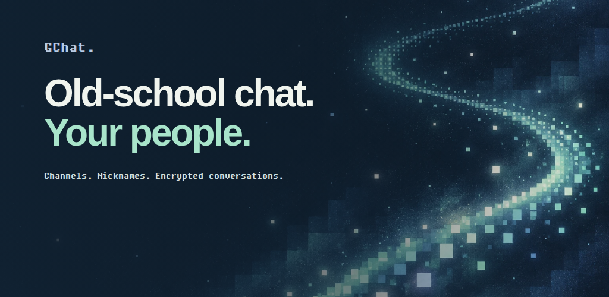

GCHAT / PLAY STORE / CREATIVE REVIEW
Old-school chat.
Your people.
The familiar feel of nicknames, channels and late-night conversations. Four images that show what happens after setup, with the real GChat interface and original pixel artwork.
Submitted to Google Play on 29 September 2026. Google accepted the update; public visibility is pending. Conversation screens use the real shared UI with synthetic data, matched to the source of published Android build 1055. Submission receipt.
